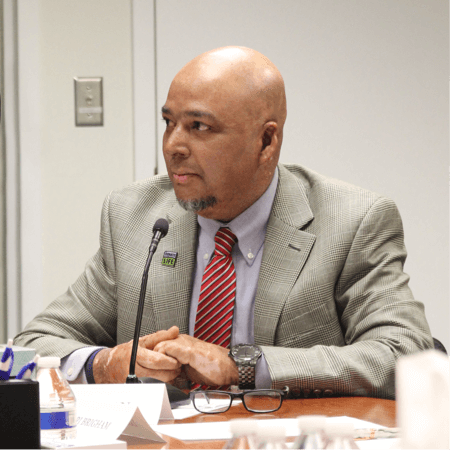
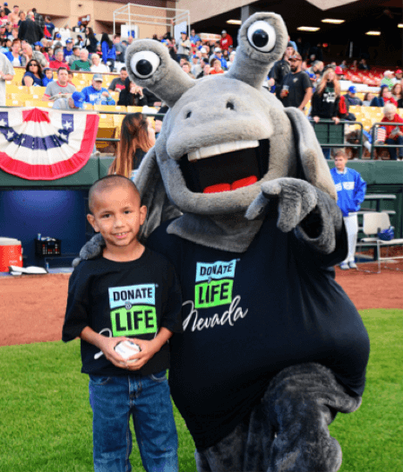
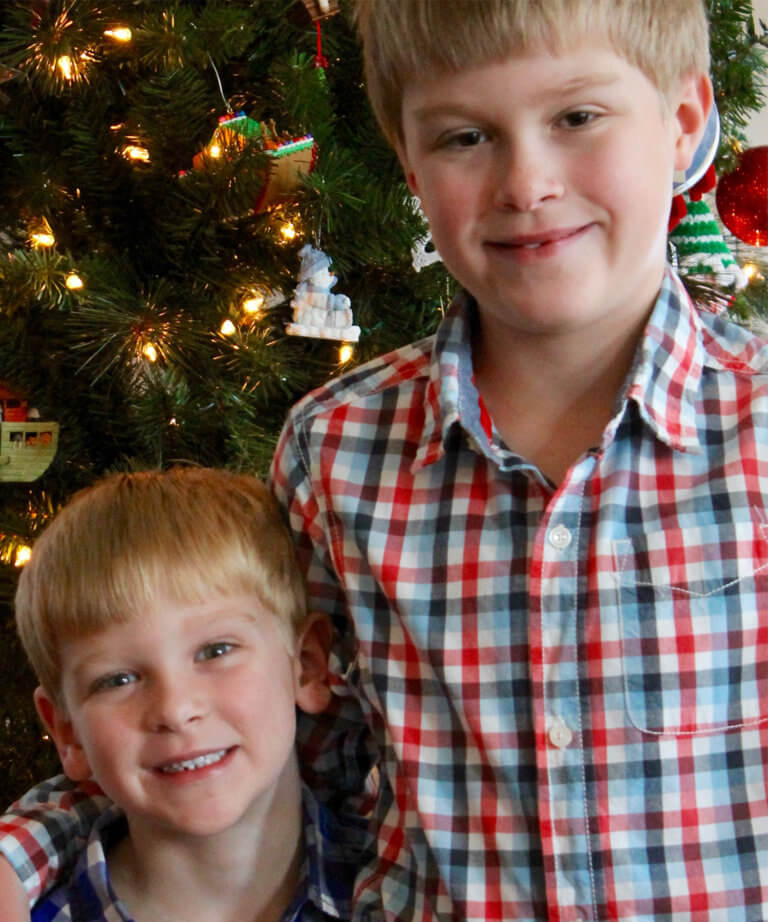
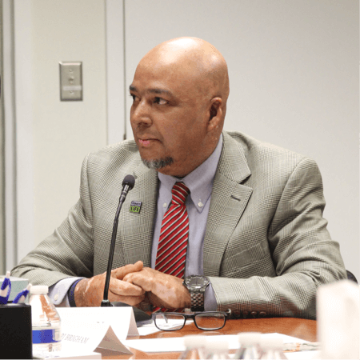
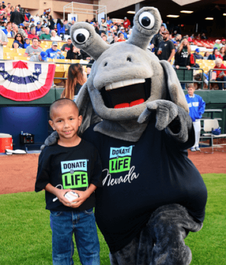
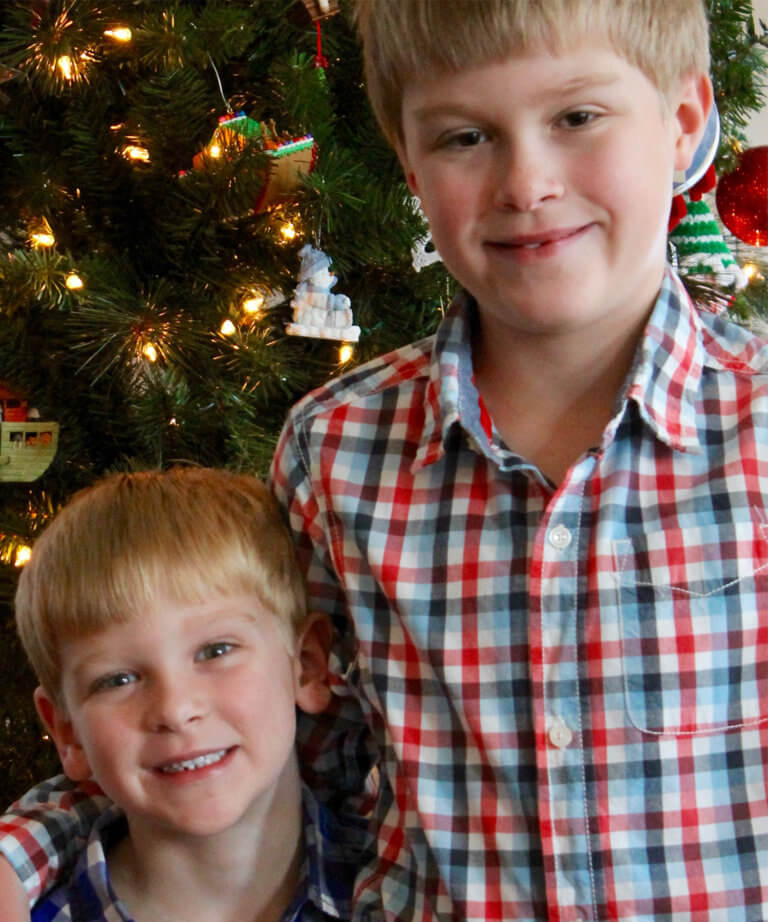
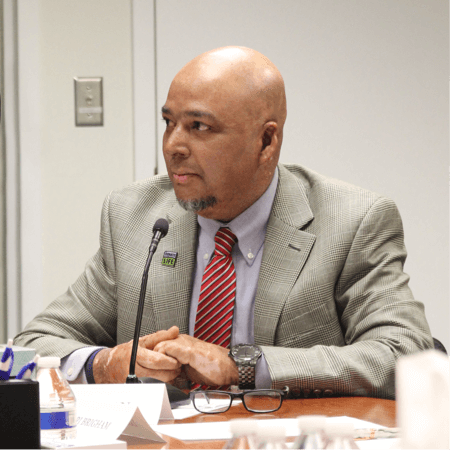
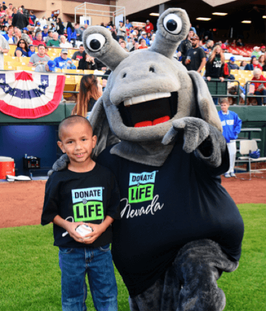
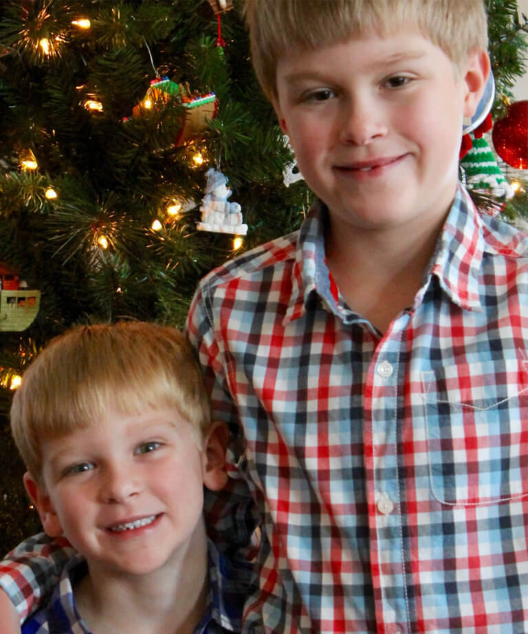

Donations
You can donate
– Organs
– Corneas
– Tissues
– Hands and Face
– Blood Stem Cells
– Cord Blood
– Bone Marrow
– Blood and Platelets
Register Now




Every 10 minutes another person is added to the national transplant waiting list
8,000 deaths occur every year in the U.S. because organs are not donated in time
22 people die each day because the organ they need is not donated in time
82% of patients waiting are in need of a kidney
1 out 3 deceased donors is over the age of 50
115,000 men, women and children await lifesaving organ transplants
The largest football stadium in the U.S. could not fit the number of patients on the national transplant waiting list